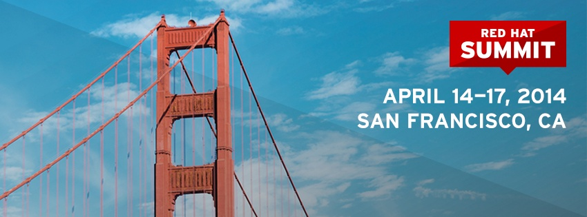

DevNation and Red Hat Summit (April 13-17, San Francisco)
This year, Red Hat is organizing DevNation for the first time (April 13-17, San Francisco), a new open source, polyglot conference for application developers and maintainers. It combines for example the old JUDCon and CamelOne conferences, but offers top notch keynotes, sessions, labs, hackfests, and panels geared for those who build (with) open source. It is _the_ place for a developer to get excellent technical information from the experts directly, and/or hang out with pizza and beer !

Co-located is Red Hat Summit (April 14-17, San Francisco), meant for anyone looking to exponentially increase their understanding of open source technology and identify powerful solutions for their business needs (although typically at a slightly higher level compared to DevNation). From community enthusiasts and system administrators to enterprise architects and CxOs, there are sessions and tracks for each level of interest and need.
This year, I’ll be doing a “deep dive into jBPM6” presentation (available for both DevNation and Red Hat Summit attendees), giving a quick overview of the jBPM 6.0 features, but also sharing a lot of technical information on some of the most important new features, like the new jBPM execution server with new remote APIs. This version is also supported as part of the JBoss BPM Suite 6.0 release.
But this is just one tiny part of the huge amount of interesting keynotes, presentations, workshops, etc. you’ll be able to attend. Looking forward to speaking to some of you, or maybe even touching some code during the hackfest (bring your laptop and we’ll get you started)!
Deep dive into jBPM6
Kris Verlaenen — jBPM project lead, Red HatBusinesses must clearly define their business processes, and quickly respond to new challenges. To do so, business analysts, developers, and end users need the tools to create, understand, analyze, and execute business processes.
In this session, Kris Verlaenen will demonstrate the capabilities of jBPM 6 and dive deeper into some of its core capabilities. You’ll learn how to:
- Model business processes interacting with remote services.
- Combine business processes with data, forms, and business rules.
- Build and deploy business processes using Git and Maven.
- Interact remotely with the jBPM execution server (REST/Java).